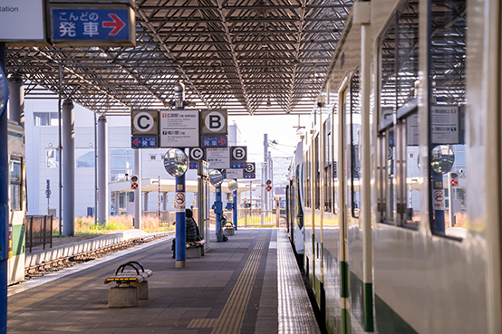
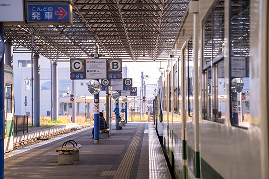
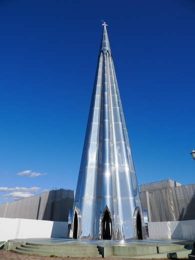
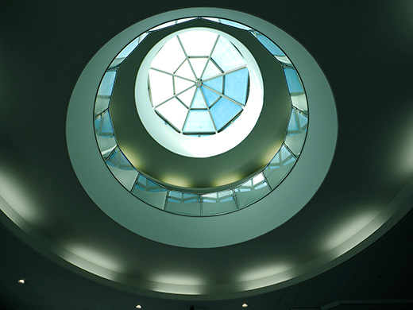
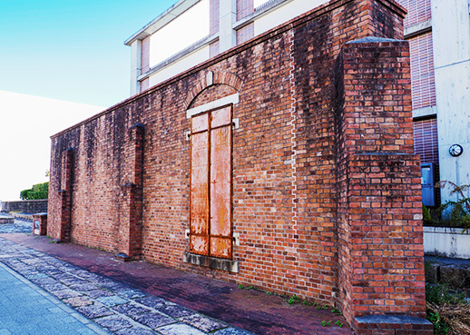
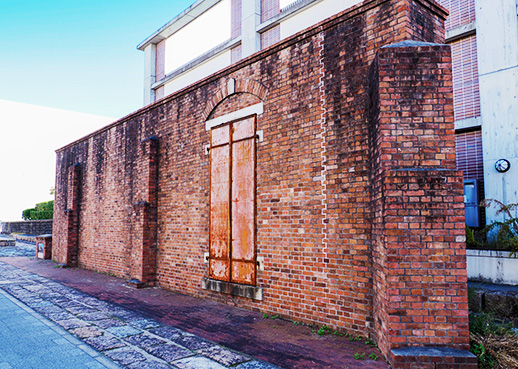
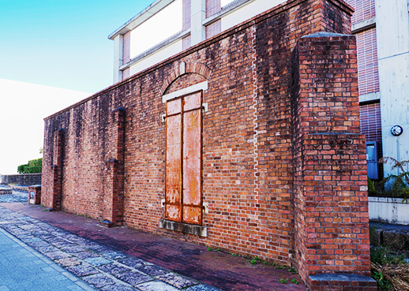

旅人と人を結ぶお土産
広島港『梶村商店』
穏やかな瀬戸内海を背景に日本一の船数が行き交う
広島港宇品旅客ターミナル。
梶村商店は広島港の土産物屋として昭和10年からお客様をお迎えして参りました。
広島の銘菓や各種お土産。
お弁当・サンドイッチ・パン・飲料水・お菓子・アイスクリームや雑貨などを取り揃え皆様をお待ちしております。
営業時間 6:00 ~ 20:50
年中無休
広島港の歴史
おすすめの
お土産

これだけは外せない！
広島みやげ
広島みやげ
定番4選
4 standard selection
ご自宅用にも
おすすめ
イチ押し
おすすめ
イチ押し
おみやげ
souvenir for yourself
Instagramで
最新情報配信中
Instagramでお店の情報を見る
お散歩マップ

 






 


アクセス
広島港１F
ターミナル内マップ

JR広島駅から
電車または路線バスで約30～50分
（正確な運行情報は各社ホームページで ご確認ください。）
店舗情報
- 店舗名
- 梶村商店
- 会社名
- 有限会社 梶村商店
- 住所
- 〒734-0011
広島市南区宇品海岸1丁目13-26
広島港宇品旅客ターミナル1階 - TEL
- 082-256-2898
- 営業時間
- 6:00～20:50
- 定休日
- 年中無休
- 支払方法
- 現金のみ